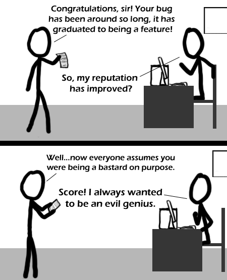

Comic JK 338
When I Feel Like It
⇤
<
?
>
⇥

⇤
<
?
>
⇥
Forum
.
RSS
.
Digg
.
Facebook
.
Reddit
.
Twitter
.
Stumbleupon
Enter your thoughts on number 338 here. Please, no spamming, trolling, phreaking or leaving skidmarks. Microsoft? >There are many examples. Most of them, yes, are Microsoft X| Intel ? The 80286 had a bug - the first 64k of extended memory was accessible from within "real mode". That bug gave us the "Upper Memory Blocks", and graduated to being a feature in subsequent x86 CPU designs... > Not many people know that, but personally I always liked that bug. >> If that truly started as a bug, it makes a bit more sense now :) The man behind the desk should be Black Hat Guy. >Or God. >>Either of those guys wouldn't 'try'--they'd do it >>>Has anyone ever seen God and Black Hat Guy in the same room at the same time? >>>>Not me. Iiiiiinteresting. >>>>>God doesnt wear a black hat, so its not him. huh. usually not commenting code is the first atrocity. >Obfusicate it! >>hmm... Obfusicated Windows... >>>Isn't that just Windows? >>>>Since when did Obfuscated have an I? -adb >>>>>Since they obfuscated the word obfuscated testing > we know nothing of that word How many microsoft programmers does it take to change a light bulb? None, they just set the industry standard to darkness